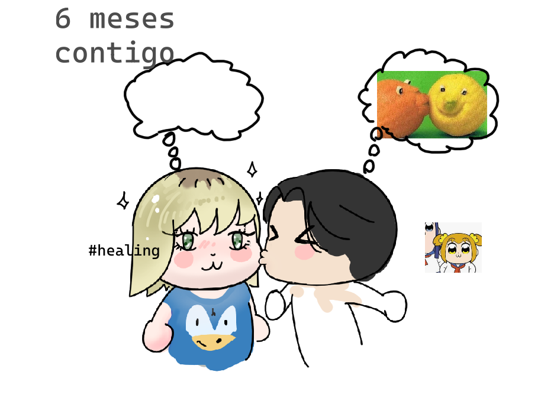

Hola. espero desde el fondo de mi corazón que puedas leer esto. Y que no sea en vano.
Si es verdad entonces, tengo que confesar que por cada mañana y cada día pienso en lo que sucedio. lo repito y lo recapacito.
Recuerdo muchas cosas, buenas y malas, pero cada cosa buena me recuerda a otra. A momentos de felicidad.
Recuerdo cuando nos juntabamos y dormiamos sobre el regazo del otro, y tambien cosas ridiculas como cuando leiamos historias de sonic sirena o jugabamos juntos. Poder compartir algo asi.
A mi no me parecia tan fan de esas historias, pero me gustaba mucho poder leer algo asi contigo, algo que no puedo hacer con nadie mas, ver las peliculas que te gustan, y escucharte como me cuentas sobre chikawas y demas.
Me acuerdo de momentos duros como cuando andabamos por las calles caminando para ver si un restaurante nos dejaba entrar. Como estabamos pintados de payasos, era unico, era divertido.
Y me arrepiento de perderlo. Recuerdo las veces bonitas que ibamos a los cines. o cuando pasaban los niños que decian que nos dieramos un beso. Las cosas pequeñas que acumulaban algo bonito.
Me acorde cuando vi tu reacción al entregarte tus regalos de cumpleaños, la satisfaccion y felicidad que me daba poder verte sonreir. Y abrazarte. ver como te llenabas de felicidad al ver el regalo o al probar el pastel.
Extraño verte sonreir, y recuerdo como al salir la ultima vez me agarrabas de la mano y me sonreias. Y yo creía que estaba todo bien. Creí que las cosas iban a mejorar.
Creí que podria experimentar mas de esos dias alegres. Tiernos, bonitos.
Como podia hacer las cosas unicas que queria hacer contigo. Desvelarnos juntos, ser el refugio de otro. Me daba orgullo saber que podia ser un lugar seguro, que podias confiar para escucharme.
Me decias lo que te atemoraba, lo que te frustraba, lo que te hacia feliz. Lo que te daba risa.
No pasa una noche en la que no dejo de pensar en esos dias. y no pasa un dia en el que no pienso en ti.
Y no hay tantas palabras para poder decirte que te extraño. Y que extraño las cosas buenas que tuvimos. Las veces que saliamos a comer, las veces que ibamos a los parques.
Caminabamos juntos, nos agarrabamos de la mano, nos besabamos, nos deciamos de todo.
Eres de las cosas que mas atesoro. Y se que han ocurrido cosas malas, crueles, viles... Pero tambien recuerdo lo bello en las cosas buenas que vivimos.
Cuando ibamos a comer y nos dabamos regalos. Y siempre buscaba las flores que mas te gustaran aunque no las encontraba. Cuando llorabamos y nos quedabamos para el otro.
Cuando me decias que me alejara en tu coche porque decias que me harías daño, y te dije que aún asi te apoyaría. Y estaba ahí. Y no me hiciste daño. Me hiciste feliz.
Cuando en la leve luz podiamos compartir nuestros secretos. Cuando podiamos hablar gentilmente de lo que nos gustaba.
Cuando jugabamos a algo y te gustaba tirarme del hielo o nos enojabamos con todos giles menos nosotros. Cuando deciamos que nos queriamos.
Cuando dibujamos en esa cafetería y pintabamos en la otra y cada uno tenia su estilo. Pero los dos estabamos de acuerdo con lo que queriamos.
Cuando me contabas como te habia ido con los niños de tu servicio social y podia ver en tus ojos que te gustaría criar a uno.
Cada vez que agarrabas mi movil y nos tomabamos fotos, o cada vez que me levantaba podía ver un mensaje tuyo de buenos dias. y si no estaba tenia la certeza de que podia enviarlo yo.
Cuando enviabamos fotos de como estabamos arreglados y siempre eramos guapos.
Cuando me mostrabas como tu gato te acompañaba en la cama y como yo acariciaba a mi mascota.
Cuando te daba un beso y tu me lo devolvias con una mordida.
Cuando jugabas con que los muñecos eran nuestros hijos y decia algo irresponsable para que intentaras defenderlo de mi.
Me gusto aprender de ti. Me gusto adorar las cosas nuevas que me mostraste.
Me gusta salir contigo como cuando fuimos juntos a una convencion para plantarle a josue stickers gooner de pokemon
Me gusto cuando veiamos el atardecer desde el parque
Me gustaba escuchar de lo tanto que te gustaba y obsesionaba una pelicula cruda como ojos bien cerrados
Me gustaba poder ver bojack contigo, sabiendo que estabas mas comoda viendolo conmigo y porque nos gustaba a los dos.
Me gusto ir al cuarto de escape contigo y siempre desee poder intentarlo otra vez contigo
Me gustaba cuando me mostrabas el proceso de tus dibujos, y como te emocionaba mostrarmelo
He buscado las peliculas que te gustan mas para verlas. Porque se que te gustan. Como el laberinto del fauno, o la historia sin fin o la cumbre escarlata.
Y he querido crecer contigo a ser una mejor version.
Y me tomo tiempo poder descubrir lo mal que hacia. Y decidi no ser asi jamas.
Por cual valor no hay mas grandre que extrañar tu amor. Pensar en ti en las canciones y sonatas. Ver el teatro y pensar en llevarte ahi alguna vez.
Ver el telefono y ver tu notificacion.
Ver tu cara y ver tu amor entre tus ojos.
Por todas las cosas bellas que vivimos. Por el arrepentimiento entre mis ojos por perderlo. No quiero que te sientas mal o culpable, por mas clemencia que pido.
Solo te pido recordar la belleza que tambien vivimos.
Frida... Me hiciste muy feliz.
No olvidare tu amor.
Porque aún te amo.
...Este es el dibujo que estaba preparando para tu regalo. Claro que... no lo pude terminar. Pensaba que habia pasado mucho tiempo en el que solo tu lo hacias, entonces era mi turno.
intentaba hacer algo estilo pucca, pero... no lo sé.
